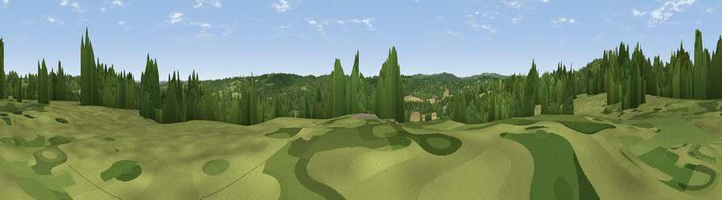

Viewpoint near Salehurst
#35967 in England · top 32% of its area beats it · near Salehurst · access?Where it is
The exact computed spot (TQ 75625 25025). Click the marker for map links.
Public access: no public right of way or access land is recorded at this exact spot — it may be on private land. Computed from Natural England's CRoW access layer and OpenStreetMap rights of way — not the legal definitive map. Always verify locally.
The view, rendered

A 360° render of this exact spot computed from the terrain model, tree cover and land cover — summer colours, afternoon light, calibrated against photographs of famous viewpoints. Real trees, hedges and buildings will differ in detail.
The panorama
Grey silhouette: terrain skyline in each direction (720 bearings, Earth curvature and refraction included). Dashed green: skyline with trees (+15 m) and buildings (+8 m) as obstacles. Blue strip: how far the ground is visible on each bearing.
Where the view opens
Wedge length = distance to the farthest visible ground on that bearing (vegetation-aware). Rings at 10, 25 and 50 km.
What fills the view
48% grassland · 39% woodland · 12% cropland · 1% built-up
Angular shares of the visible panorama (visual magnitude), not map area. Landscape diversity 0.45 (0–1 Shannon).
Key numbers
More beautiful places nearby
The staircase of upgrades: each row has a higher view potential than everything closer. Driving times are estimates from straight-line distance, calibrated against real road routing — check an actual route before setting out.
| Place | Direction | Drive | Score |
|---|---|---|---|
| Silver Hill | WNW · 2 km | ~4 min | 39.4 |
| Viewpoint near Netherfield | SW · 7 km | ~15 min | 60.3 |
| Viewpoint near Brightling | WSW · 9 km | ~18 min | 61.6 |
| Brightling Obelisk [Brightling Down] | WSW · 9 km | ~18 min | 69.1 |
| Viewpoint near Three Oaks | SSE · 14 km | ~26 min | 69.3 |
| Viewpoint near Guestling Green | SSE · 16 km | ~29 min | 72.2 |
| Viewpoint near Fairlight | SE · 17 km | ~29 min | 74.5 |
| Viewpoint near Fairlight | SE · 17 km | ~30 min | 75.1 |
50.99782, 0.50146 · source: screening · position refined by local search. Computed location — check access rights before visiting.